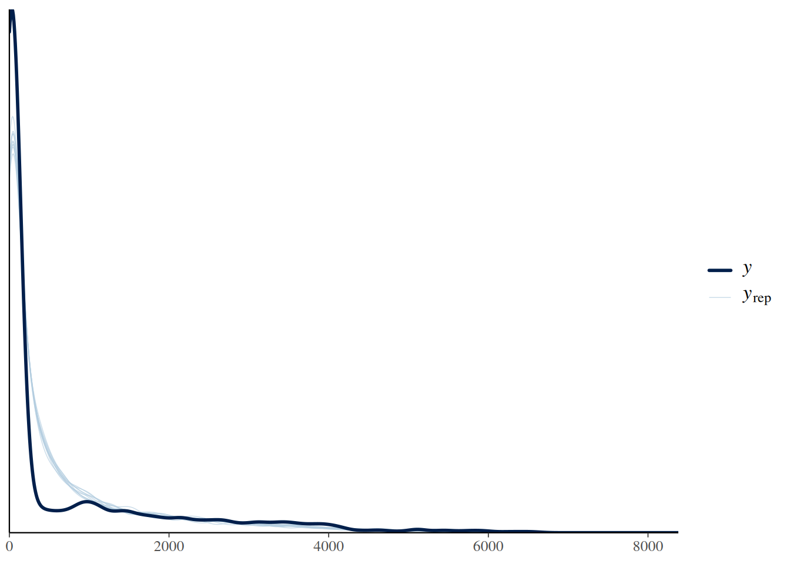
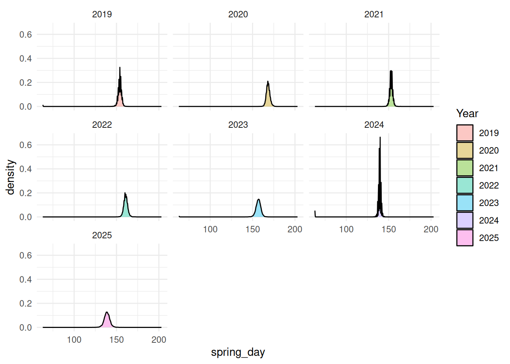

This project is one of the building blocks for a bigger project of my PhD work that looks into the effects of spring timing on the breeding success of an alpine bird, willow ptarmigan (Lagopus lagopus) in central Norway. As there is yearly variation in the number of chicks produced, we are interested in understanding if the yearly differences in greening /timing of spring affects this biological process. We have camera data from 2019 to 2025 where greenness is quantified by the number of green pixels in the picture. The camera image spans from mid-March to late-June (winter to spring transition) and are set up across 7 different plots within our study area.
For the purpose of BADT project, I focus on estimating the timing of greenness for each year. For each year, I am interested in first, estimating the mean greenness and then seeing the seasonal change in greenness for each of these years. I test three models to find which model best reflects the ecological process of greening and statistically explain my seasonal pattern well. I run a non-linear model by using a spline function and then use binomial distribution where n_green is the number of green pixels and N_pixel is trials, which is the total number of pixels.
NB: I did not use Year as random effect for two reasons
I would like to have year to year comparison and know which year was greener
I only have 7 years, which is a bit low to properly estimate stable variance
MODELS
Model binomial: n_green | trials(N_pixel) ~ Year + s(JulianDay, by = Year) + (1|Plot),
family = binomial (link = “logit”)
Model beta binomial with default priors: n_green | trials(N_pixel) ~ Year + s(JulianDay, by = Year) + (1|Plot)
family = beta_binomial (link = “logit”)
Model beta-binomial with weakly informative prior: n_green | trials(N_pixel) ~ Year + s(JulianDay, by = Year) + (1|Plot)
family = binomial (link = “logit”) with the priors:
prior(normal(0, 1), class = “b”)
prior(normal(0, 2), class = “Intercept”)
prior(exponential(1), class = “sd”)
prior(exponential(1), class = “sds”)
prior(gamma(2, 0.1), class = “phi”)
Analysis
Step 1: Data Manipulation
Loading required package: Rcpp
Loading 'brms' package (version 2.23.0). Useful instructions
can be found by typing help('brms'). A more detailed introduction
to the package is available through vignette('brms_overview').
Attaching package: 'brms'
The following object is masked from 'package:stats':
ar
This is cmdstanr version 0.9.0
- CmdStanR documentation and vignettes: mc-stan.org/cmdstanr
Family: beta_binomial
Links: mu = logit
Formula: n_green | trials(N_pixel) ~ Year + (1 | Plot)
Data: combined_data (Number of observations: 4648)
Draws: 3 chains, each with iter = 2000; warmup = 500; thin = 1;
total post-warmup draws = 4500
Multilevel Hyperparameters:
~Plot (Number of levels: 7)
Estimate Est.Error l-95% CI u-95% CI Rhat Bulk_ESS Tail_ESS
sd(Intercept) 0.20 0.08 0.11 0.40 1.00 1149 2016
Regression Coefficients:
Estimate Est.Error l-95% CI u-95% CI Rhat Bulk_ESS Tail_ESS
Intercept -2.60 0.09 -2.78 -2.41 1.00 1483 1889
Year2020 -0.21 0.06 -0.32 -0.10 1.00 2363 2693
Year2021 -0.05 0.05 -0.15 0.06 1.00 2211 2606
Year2022 -0.20 0.06 -0.30 -0.08 1.00 2335 3057
Year2023 -0.02 0.06 -0.14 0.09 1.00 2180 2202
Year2024 0.22 0.06 0.11 0.33 1.00 1999 2962
Year2025 0.27 0.06 0.16 0.39 1.00 2258 2889
Further Distributional Parameters:
Estimate Est.Error l-95% CI u-95% CI Rhat Bulk_ESS Tail_ESS
phi 5.03 0.13 4.77 5.29 1.00 3601 2853
Draws were sampled using sample(hmc). For each parameter, Bulk_ESS
and Tail_ESS are effective sample size measures, and Rhat is the potential
scale reduction factor on split chains (at convergence, Rhat = 1).
Results and Interpretation
Clearly, the binomial model failed to converge with R-hat value > 1. The model took 13 hours to run. Silly mistake but the lesson learned here is to check for overdispersion first and then to run the model. I switched to beta-binomial below and the model results improved. __________________________________________________________________________________________
Warning: There were 7 divergent transitions after warmup. Increasing
adapt_delta above 0.8 may help. See
http://mc-stan.org/misc/warnings.html#divergent-transitions-after-warmup
Using 10 posterior draws for ppc type 'dens_overlay' by default.

Priors: here I used the default priors that is plausible for each parameter
get_prior( n_green |trials(N_pixel) ~ Year +s(JulianDay, by =Year) + (1| Plot),data = combined_data,family =beta_binomial())
prior class coef group resp dpar nlpar
(flat) b
(flat) b sJulianDay:Year2019_1
(flat) b sJulianDay:Year2020_1
(flat) b sJulianDay:Year2021_1
(flat) b sJulianDay:Year2022_1
(flat) b sJulianDay:Year2023_1
(flat) b sJulianDay:Year2024_1
(flat) b sJulianDay:Year2025_1
(flat) b Year2020
(flat) b Year2021
(flat) b Year2022
(flat) b Year2023
(flat) b Year2024
(flat) b Year2025
student_t(3, 0, 2.5) Intercept
gamma(0.01, 0.01) phi
student_t(3, 0, 2.5) sd
student_t(3, 0, 2.5) sd Plot
student_t(3, 0, 2.5) sd Intercept Plot
student_t(3, 0, 2.5) sds
student_t(3, 0, 2.5) sds s(JulianDay, by = Year)
lb ub tag source
default
(vectorized)
(vectorized)
(vectorized)
(vectorized)
(vectorized)
(vectorized)
(vectorized)
(vectorized)
(vectorized)
(vectorized)
(vectorized)
(vectorized)
(vectorized)
default
0 default
0 default
0 (vectorized)
0 (vectorized)
0 default
0 (vectorized)
Interpret the beta-binomial model results
Model Validation and Fit: This is much better result compared to the first model with just binomial distribution. The Rhat value is 1 for each effect which indicates that the model converged well. The Bulk ESS and Tail ESS, which is our effective sample size are above 1000. The phi-value of 24.81 suggests that there is substantial overdispersion, which justifies our reason to use the beta-binomial distribution.
However, there are minor divergence issues in the model and more importantly the 95% CI and the standard error for the spline coefficient are also quite large. So I decided to put a weakly informative priors to set some biologically plausible values in hopes to improve the model performance. The model is presented below:
Warning: Removed 59 rows containing non-finite outside the scale range
(`stat_density()`).

Results
Compared to the model with uniformative default priors, the model with weakly informative priors I set performed much better. Firstly the spline coefficient (sds smoothness) greatly improved. For example in year 2019, sds (sJulianDayYear2019_1) was 4.64 (2.08- 9.99). But with the prior, exponential (1) on sds, the sds (sJulianDayYear2019_1) was lowered to 3.7 (2.14- 6.12). The stronger prior helped to smoothen the curve and make it more realistic. Yet, the regression coefficient, random effect and dispersion (phi) values remained almost all identical despite setting stronger priors on these parameters as well. The ESS values also increased meaning the sampling quality got better with the priors I set. In conclusion, this model with the weakly informative prior improved the smoother and provided more stable estimates of seasonal greenness patterns in each year.
In terms of answering my own scientific question about the mean greenness each year and the timing of grenness each year, both models provided very similar values. My preliminary analysis shows a strong evidence for the yearly variation in average greenness levels between 2019 to 2025. In particular, the regression coefficient indicate that the year 2020 was the year with lowest greeness level (β = -0.74 with 95 % CI = - 0.87, - 0.63) and the years 2024 and 2025 had the most greeness (β = 0.32 - 0.43) in relation to the year 2019.
There is some variation in greenness (SD = 0.53) across the plots which indicates that there is spatial heterogenity within our study area. This is expected as (i) some plots are more south-facing compared to the others (ii) plots have different types of vegetation. The model has accounted for this random effect well, given the big ESS and Rhat value of 1.
As to answer the question when does spring/greening actually start for each year, I decided that spring begins when the proportion of greenness goes above 0.1(this is an aribitary value and I am yet to figure out the best way to define the threshold but I am thinking to use X% of the maximum greenness or maximum slope for example). Using this value, I extracted the Julian Day for each year to decide the day of spring (results in the table with 95% Credible Interval). Spring was late in 2020 (Julian day 168), which also aligns well with the lowest greenness value and the weather information known about the study area during that year. It seems 2025 and 2024 was the year with earliest springs.
While this is a preliminary investigation of the greenness data, I am continuing to explore and optimize more model structures together with finding perhaps a better estimation criteria for the timing of spring. I will eventually use LOO to rank and compare the models. The effect and timing of greenness on the breeding success will then be explored after this. But for the purpose of this project and the given time frame, I will conclude the work here.